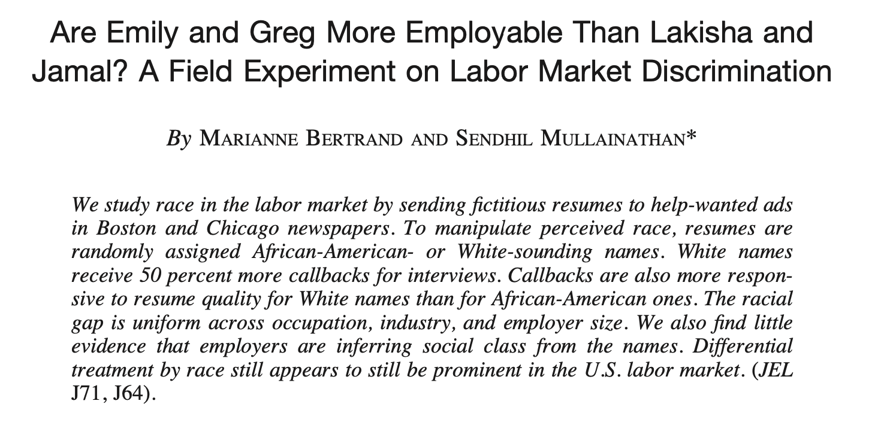
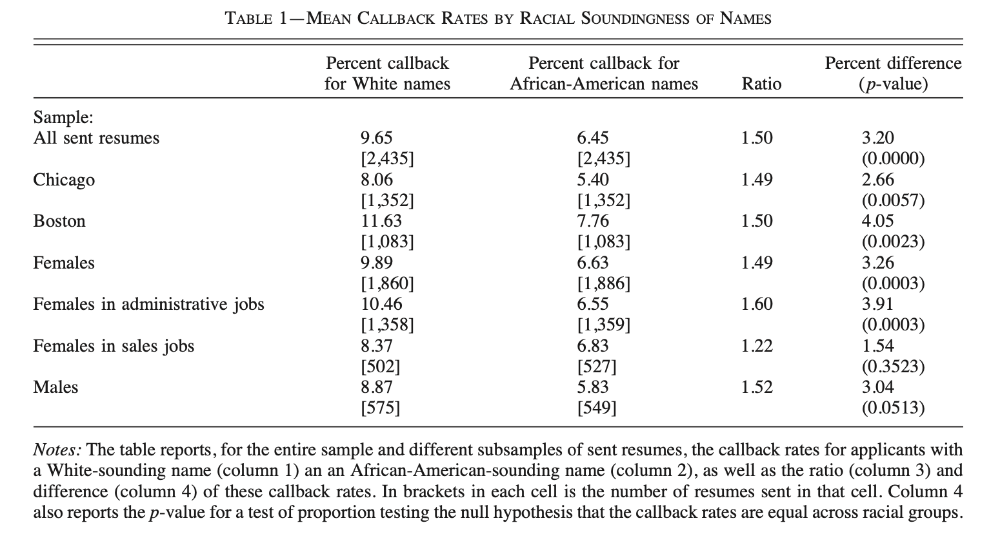
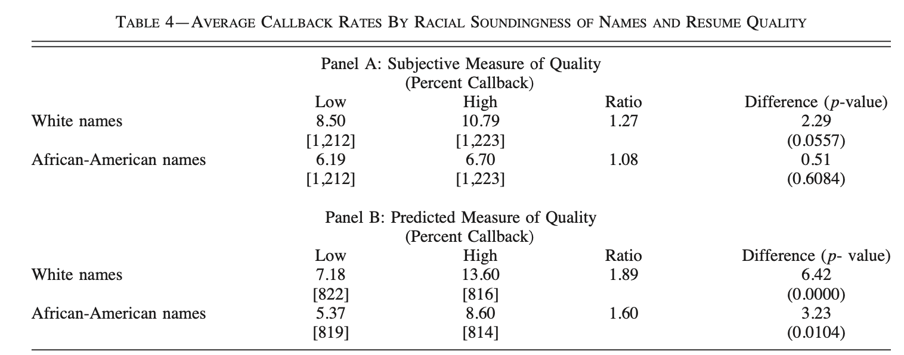
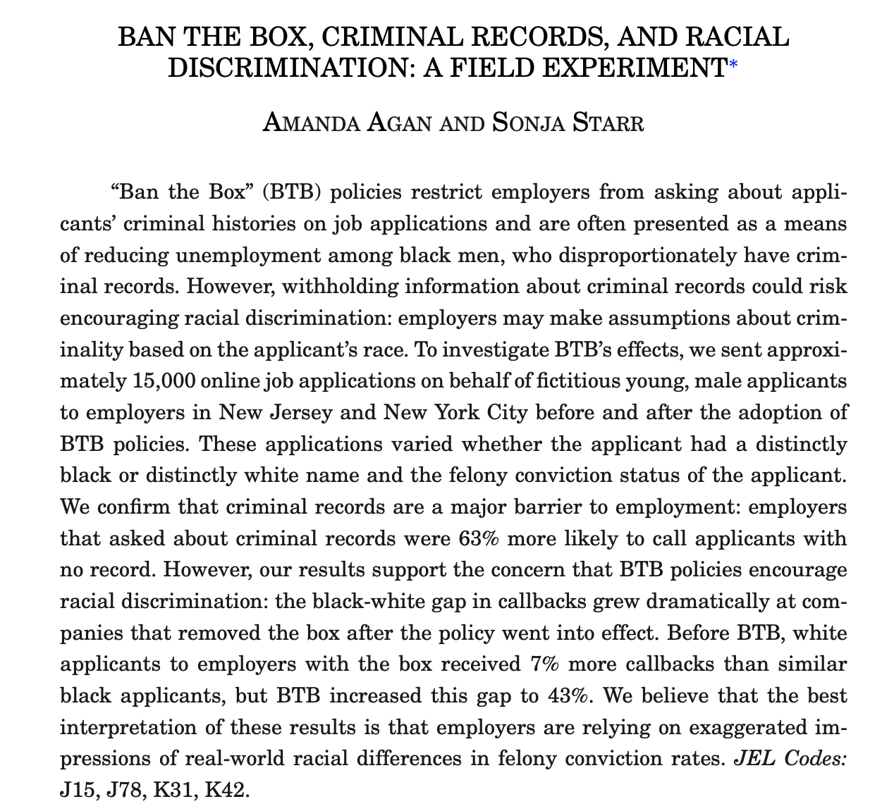
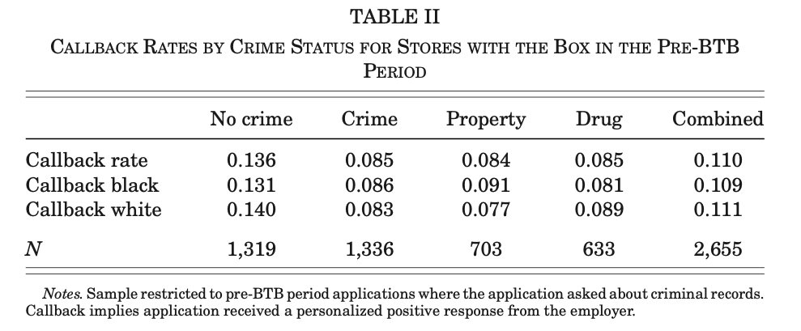
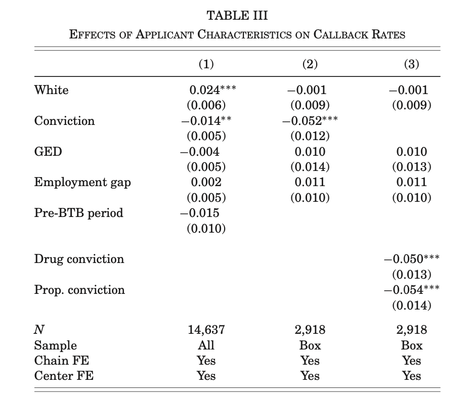
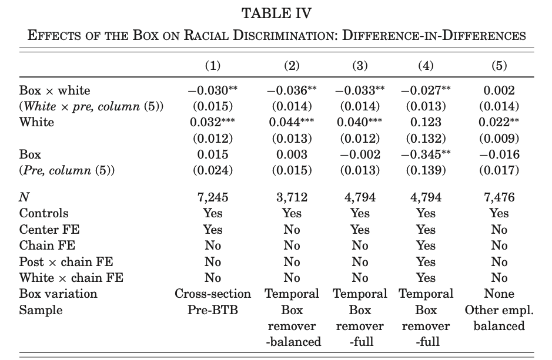

Applications of Experiments in Economics
Racial Bias in Callbacks

Paper Summary
- Big question: is there racial discrimination in the labor market?
- Correlations uninformative: legacy of institutional racism leads to differences in education, opportunities, and human capital
- This paper: measures a specific kind of discrimination. Callbacks based on name (which can signify race)
- Methodology: Randomize names on job application to infer effect of changing “black sounding” name to “white sounding”
- Often referred to as a field experiment
Design of the Experiment
- Start by collecting resumes from two job search sites
- restrict to cities and time of experiment
- restrict to four occupations (sales, clerical, customer services, admin)
- classify subjectively into two categories (high vs low quality)
- Generate a pool of names
- Use all birth certificates from MA: 1974-1979
- Tabulate frequency by race to get most uniquely white/black names
- Validate with survey
- Survey job ads and manually pick two high and two low quality resumes that best fit job description
- Randomly assign one white name and one black name to each resume of same quality
- Measure callbacks for each resume
- Respond to 1300 job ads with nearly 5000 resumes. What next? What would it tell us? Why?
Results

Thoughts?
- How to interpret this table?
- What does it tell us?
- What doesn’t it tell us?
Results

Thoughts?
- How to interpret this table?
- What does it tell us?
- What doesn’t it tell us?
- What role does randomization play? Why do we need it?
The Effect of Ban the Box on Racial Discrimination
Application 2: Ban the Box
- Ban the Box: law that makes it illegal for employers to ask job applicants if they have ever been convicted of a crime.
- Intention: reduce labor market discrimination against individuals with criminal priors
- Due to mass incarceration and other discriminatory policies, black men have higher rates of prior conviction than white men
- Possible consequence: increase discrimination against black men without prior conviction (form of statistical discrimination)
- Link to paper

Paper Summary
- Main question: is there labor market discrimination against males with prior conviction? Does BTB increase racial discrimination?
- Another “resume study”
- Randomized resumes in NY and NJ before and after introduction of BTB in both states
Methodology
- Population:
- private and for-profit employers on indeed.com and snagajob.com
- jobs requiring no post-secondary education, special skills, or work experience (e.g. retail and restaurant)
- Pre and post BTB introduction in 2015
- On otherwise identical resumes, randomized along four dimensions:
- race (by name);
- a non-violent and minor felony conviction;
- employment gap in resume; and
- GED or High school diploma
- 15,220 applications to 4,291 stores among 293 chains
- Now what?
Interpret

Interpret

Regression Framework
Store \(j\) for applicant \(i\): \[ Callback_{ij} = \alpha + \beta_{1} Box_{j} + \beta_{2}White_{i} + \beta_{3}Box_{j}\times White_{i} + \Gamma \mathbf{X}_{i} + \epsilon_{ij} \]
- Which coefficient captures the effect of box info on racial gap?
- What values would suggest that employers use race to proxy for criminal conviction?
- Cross-sectional and temporal sources of variation in \(Box_{j}\)
- Limit either to pre BTB (cross-sectional) or stores that initially have box (temporal)
Results

. . .
Thoughts? How do you think standard errors should be calculated?